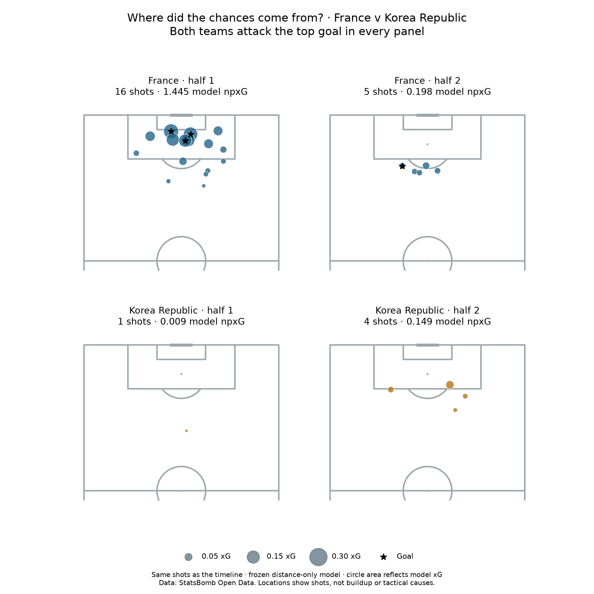

Football analyst training · Project lesson 31
Connect the timeline to the pitch.
The timeline told us when shots happened. The shot map tells us where the player was when taking each shot.
1. Read the symbols
Each coloured circle is one shot. Larger circles mean higher model xG; black stars mark goals. Both teams attack the goal at the top in every panel. These circles are shot starts, not where the ball ended up.

2. Describe what changed
This is an average. It does not say every second-half shot was farther away. The map helps us interpret the lower second-half model xG, but does not explain its tactical cause.
3. Keep the model limitation visible
Our model uses distance only. Two shots at the same distance get the same probability, even if one is central and another is from a tight angle. Circle size shows the model's estimate; it does not prove the estimate is correct.
4. Run and explain
Open 31_shot_location_maps.py in Spyder and run it. pitch.scatter(...) places the shots. s=probability * 1800 controls circle area. The original x and y values are passed directly to mplsoccer, which handles the vertical orientation.
Your analyst task: describe France's change in shot count and distance, then propose one question to investigate with video. Ask your teacher to review your wording or explain a code line.
Example wording
“France took 16 shots before halftime and five afterward; its average shot distance also increased from about 16 to 20 reference metres. I would examine the attacking sequences to understand how it reached closer shooting positions in the first half.” This describes evidence before asking about cause.